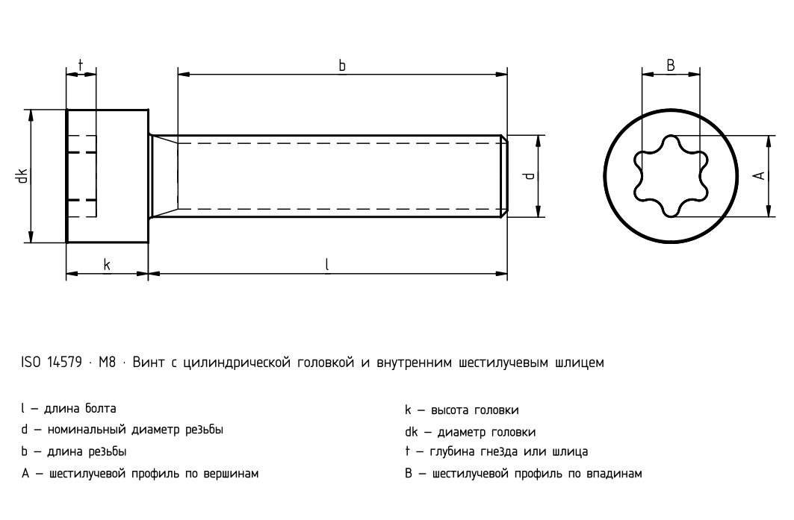

Винт с цилиндрической головкой и внутренним шестилучевым шлицем
Проверенная выборка каталогов

| Пункт | Значение |
|---|---|
| Нормативный контекст | ISO 14579 |
| Класс прочности моделей по умолчанию | 8,8 |
| d | P | dk | k | T | A | B | t | r |
|---|---|---|---|---|---|---|---|---|
| M2 | 0,4 | 3,8 | 2 | T6 | 1,75 | 1,27 | 0,71 | 0,1 |
| M2,5 | 0,45 | 4,5 | 2,5 | T8 | 2,4 | 1,75 | 0,91 | 0,1 |
| M3 | 0,5 | 5,5 | 3 | T10 | 2,8 | 2,05 | 1,01 | 0,1 |
| M4 | 0,7 | 7 | 4 | T20 | 3,95 | 2,85 | 1,42 | 0,2 |
| M5 | 0,8 | 8,5 | 5 | T25 | 4,5 | 3,25 | 1,65 | 0,2 |
| M6 | 1 | 10 | 6 | T30 | 5,6 | 4,05 | 2,02 | 0,25 |
| M8 | 1,25 | 13 | 8 | T45 | 7,93 | 5,64 | 2,92 | 0,4 |
Каталожные длины
| l [mm] | M2 | M2,5 | M3 | M4 | M5 | M6 | M8 |
|---|---|---|---|---|---|---|---|
| 3 | ✓ | — | — | — | — | — | — |
| 4 | ✓ | ✓ | — | — | — | — | — |
| 5 | ✓ | ✓ | ✓ | — | — | — | — |
| 6 | ✓ | ✓ | ✓ | ✓ | — | — | — |
| 8 | ✓ | ✓ | ✓ | ✓ | ✓ | — | — |
| 10 | ✓ | ✓ | ✓ | ✓ | ✓ | ✓ | — |
| 12 | ✓ | ✓ | ✓ | ✓ | ✓ | ✓ | ✓ |
| 16 | ✓ | ✓ | ✓ | ✓ | ✓ | ✓ | ✓ |
| 20 | ✓ | ✓ | ✓ | ✓ | ✓ | ✓ | ✓ |
| 25 | — | ✓ | ✓ | ✓ | ✓ | ✓ | ✓ |
| 30 | — | — | ✓ | ✓ | ✓ | ✓ | ✓ |
| 35 | — | — | — | ✓ | ✓ | ✓ | ✓ |
| 40 | — | — | — | ✓ | ✓ | ✓ | ✓ |
| 45 | — | — | — | — | ✓ | ✓ | ✓ |
| 50 | — | — | — | — | ✓ | ✓ | ✓ |
| 55 | — | — | — | — | — | ✓ | ✓ |
| 60 | — | — | — | — | — | ✓ | ✓ |
| 65 | — | — | — | — | — | — | ✓ |
| 70 | — | — | — | — | — | — | ✓ |
| 80 | — | — | — | — | — | — | ✓ |
| Пункт | Значение |
|---|---|
| Нормативный контекст | ISO 14579 |
| Класс прочности моделей по умолчанию | 8,8 |
| d | P | dk | k | T | A | B |
|---|---|---|---|---|---|---|
| M2 | 0,4 | 3,8 | 2 | T6 | 1,75 | 1,27 |
| M2,5 | 0,45 | 4,5 | 2,5 | T8 | 2,4 | 1,75 |
| M3 | 0,5 | 5,5 | 3 | T10 | 2,8 | 2,05 |
| M4 | 0,7 | 7 | 4 | T20 | 3,95 | 2,85 |
| M5 | 0,8 | 8,5 | 5 | T25 | 4,5 | 3,25 |
| M6 | 1 | 10 | 6 | T30 | 5,6 | 4,05 |
| M8 | 1,25 | 13 | 8 | T45 | 7,93 | 5,64 |
| d | t | r |
|---|---|---|
| M2 | 0,71 | 0,1 |
| M2,5 | 0,91 | 0,1 |
| M3 | 1,01 | 0,1 |
| M4 | 1,42 | 0,2 |
| M5 | 1,65 | 0,2 |
| M6 | 2,02 | 0,25 |
| M8 | 2,92 | 0,4 |
Каталожные длины
| l [mm] | M2 | M2,5 | M3 | M4 | M5 | M6 |
|---|---|---|---|---|---|---|
| 3 | ✓ | — | — | — | — | — |
| 4 | ✓ | ✓ | — | — | — | — |
| 5 | ✓ | ✓ | ✓ | — | — | — |
| 6 | ✓ | ✓ | ✓ | ✓ | — | — |
| 8 | ✓ | ✓ | ✓ | ✓ | ✓ | — |
| 10 | ✓ | ✓ | ✓ | ✓ | ✓ | ✓ |
| 12 | ✓ | ✓ | ✓ | ✓ | ✓ | ✓ |
| 16 | ✓ | ✓ | ✓ | ✓ | ✓ | ✓ |
| 20 | ✓ | ✓ | ✓ | ✓ | ✓ | ✓ |
| 25 | — | ✓ | ✓ | ✓ | ✓ | ✓ |
| 30 | — | — | ✓ | ✓ | ✓ | ✓ |
| 35 | — | — | — | ✓ | ✓ | ✓ |
| 40 | — | — | — | ✓ | ✓ | ✓ |
| 45 | — | — | — | — | ✓ | ✓ |
| 50 | — | — | — | — | ✓ | ✓ |
| 55 | — | — | — | — | — | ✓ |
| 60 | — | — | — | — | — | ✓ |
| 65 | — | — | — | — | — | — |
| 70 | — | — | — | — | — | — |
| 80 | — | — | — | — | — | — |
Каталожные длины
| l [mm] | M8 |
|---|---|
| 3 | — |
| 4 | — |
| 5 | — |
| 6 | — |
| 8 | — |
| 10 | — |
| 12 | ✓ |
| 16 | ✓ |
| 20 | ✓ |
| 25 | ✓ |
| 30 | ✓ |
| 35 | ✓ |
| 40 | ✓ |
| 45 | ✓ |
| 50 | ✓ |
| 55 | ✓ |
| 60 | ✓ |
| 65 | ✓ |
| 70 | ✓ |
| 80 | ✓ |